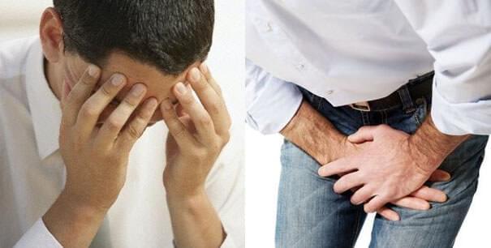
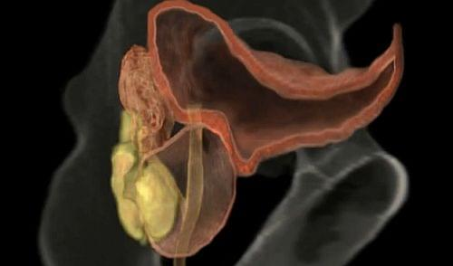
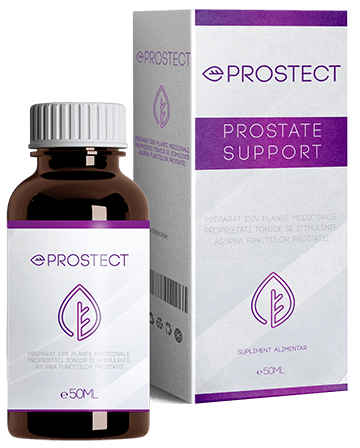

Dacă eşti BĂRBAT, cu siguranţă ai aceste probleme de PROSTATĂ sau te poţi aştepta oricând să le ai
Majoritatea bărbaţilor de la adolescenţă până la senescenţă sunt predispuşi să aibă probleme cu prostata. Bărbatul tânăr suferă predominant de patologii inflamatorii ale prostatei, bărbatul adult şi în senescenţă – de patologii tumorale. În mod eronat, se consideră că toate patologiile inflamatorii la nivelul micului bazin poartă denumirea de prostatită.
Adenomul de prostată (HBP) este o afectiune benignă. În urmă cu 20 de ani, prima opţiune de tratament pentru pacienţii care aveau HBP era intervenţia chirugicală. Tratamentul medicamentos pentru adenomul de prostată nu vindecă boala, scopul acestuia fiind de a ameliora simptomele şi de a stopa progresia bolii.
Ceea ce se întâmpla acum 20 de ani nu ar mai mulțumi pacienții de acum. Cerințele referitoare la calitate cresc. Toate acestea sunt posibile cu ajutorul chirurgiei robotice, a terapiei focale, a RMN-ului de prostată și a supravegherii active. Răspunsul medicamentos este format din diferite terapii dar de foarte multe ori tratamentele medicale sunt ineficiente sau nu suficient de eficace. Iar dacă partea de tratament medicamentos reușeste să țină lucrurile sub control, consecințele psihice pot fi de multe ori cele mai anevoioase.
Medicina evoluează foarte mult şi există specialişti foarte buni peste tot în Europa, în special în Germania, unde sunt foarte multe centre specializate în domeniul urologiei. Aici se utilizează cele mai recente tehnici și medicamente, există posibilitatea de a aplica metode inovatoare, tehnici terapeutice, tratament cu TCR, cu laser, masajul prostatic și alte metode care ajută pacientul să scape de boală cât mai curând posibil, să prevină recidivele, complicațiile.
Despre aceste lucruri şi de ce prostatita reprezintă o problemă atât de acută pentru bărbaţi, ne va spune doctorul în medicină Tudor Iordache, medic urolog-androlog la Clinica de Urologie.
”Domnule doctor, conform ultimelor statistici, 1 din 7 bărbaţi va face cancer de prostată, aşa că este foarte important să ştim care sunt simptomele acestei maladii.”
“Aceasta este o mare problemă în cazul cancerului la prostată. Când pacienții au simptome este deja puțin cam târziu să poți trata ușor acel cancer. Scopul este să îl depistăm precoce. Mai multe simptome ce se manifestă în zona pelviană sunt asociate cu o afecţiune inflamatorie sau tumorală a prostatei. Prostatita poate cauza febră, urinare dificilă şi dureri în regiunea sacrală sau a vezicii urinare. Când prostata este foarte umflată, urinarea poate fi chiar imposibilă. Afecţiunile obişnuite ale prostatei pot mări frecvenţa micţiunilor, pot cauza apariţia nevoii de a urina în timpul nopţii, scăderea forţei fluxului urinar şi apariţia senzaţiei de golire incompletă a vezicii.”
“Cine este mai predispus prostatita cronică? Este o boală a celor în vârstă sau şi a tinerilor?”
“Potrivit statisticilor medicale, adenomul de prostată reprezintă cea mai frecventă problemă pe care o acuză peste 70% dintre bărbaţii trecuţi de 60 de ani. Rândurile suferinzilor se îngroaşă substanţial în pragul vârstei de 80 de ani, când circa 90% dintre bărbaţi se confruntă cu această afecţiune. Să nu vă imaginaţi însă că până la 60 de ani bărbaţii sunt scutiţi de motive de îngrijorare. Aceleaşi statistici arată că adenomul de prostată se întâlneşte şi la cei cu vârste între 18 şi 40 de ani.”
“Care este vârsta aproximativă a pacienţilor?”
”Din păcate, în ultima perioadă am foarte multe cazuri de tineri care se neglijeaza şi vin la consult când e prea târziu.Tot mai mulţi tineri au probleme de erecţie, constată că nu pot avea copii sau chiar urinează cu sânge, dar trec prea uşor cu vederea peste aceste manifestări. Prin urmare, prostatita nu-i iartă nici pe cei de 18-20 ani.”
“S-a dovedit că sexul neprotejat este o cauză a prostatitei! Este adevărat acest lucru?”
“Printre factorii de risc care determină posibilitatea dezvoltării prostatitei se numără şi bolile cu transmitere sexuală, sexul anal şi altele. Activitatea sexuală este un factor important în ceea ce priveşte cancerul de prostată.”
“Care este diferenţa între prostatita acută şi cea cronică?”
“În funcţie de cauze şi modul de manifestare, putem vorbi de prostatita acută sau cea cronică. Prostatita acută are simptome severe, dar este mai uşor de identificat şi de tratat, iar cea cronică apare atunci când bolnavul nu tratează corespunzător prostatita acută, ceea ce duce la o anomalie la nivelul prostatei, cum ar fi îngustarea uretrei sau adenomul de prostată. În acest caz, tratamentul este mult mai complex.”
“Spuneţi-ne care sunt simptomele prostatitei. Când trebuie să se prezinte un bărbat la doctor?”
“Simptomele cuprind: durerile perineale, durerile în timpul micţiunii, asociate sau nu cu dereglări micţionale (usturime în timpul micţiunii, dereglarea jetului urinar – dificultăţi în pornirea jetului urinar, jet urinar întrerupt, presiune scăzută a jetului urinar şi picături de urină după terminarea jetului), senzaţie de golire incompletă a vezicii urinare, durere sau disconfort la nivelul spatelui, zonei testiculare sau anale, abdomenului inferior, deasupra pubisului sau coapse). Ulterior se asociază simptomele de ordin sexual: printre primele apare ejacularea precoce. Dacă nu se întreprinde nici o măsură, mult mai ulterior, apare disfuncţia erectilă (impotenţa) prin mecanism indirect.”
“Prostatita poate crea probleme în ceea ce priveşte activitatea sexuală?”
“Sigur că da! Bărbaţilor care suferă de prostatită le este aproape imposibil să se bucure de un act sexual, din cauza durerilor puternice resimţite în timpul erecţiei şi ejaculării. De asemenea, unele medicamente folosite pentru reducerea intensităţii simptomelor pot diminua apetitul sexual. Deoarece prostata este direct implicată în producerea spermei, prostatita poate duce la scăderea fertilităţii, prin reducerea numărului şi mobilităţii spermatozoizilor.”
“Se spune că prostatita cronică nu poate fi tratată! Este adevărat?”
“Categoric nu! Eu le recomand întotdeauna pacienţilor mei . Este cea mai noua inovatie cu rol de combatere a prostatitei cronice. Dupa cura de administrare a picături, sistemul circulator va fi îmbunătăţit, procesul de urinare va fi normalizat, creşte imunitatea şi va spori libidoul. Utilizând picăturile vor fi alungate durerile din perineu, rect şi testicule. După acest tratament cu natural, urinarea se normalizează.”
“Cât timp durează tratamentul cu ? Mai mult de 1 an?”
“Nu, nicidecum! În doar o lună sunteţi sănătoşi din nou! se administrează de 3 ori pe zi, după masă, timp de 30 de zile. Administrarea este de 30 de picături (echivalentul a 1 linguriţă) într-un pahar cu apă caldă.”
“Vă mulţumesc foarte mult pentru acest interviu! În încheiere, poate doriţi să mai transmiteţi ceva!”
“Nu vă neglijaţi şi mergeţi regulat la medic pentru un control! Prostatita nu are vârstă! Mai mult, recomand tuturor pentru că previne apariţia prostatitei şi o vindecă în cel mai scurt timp. Ca ajutor, vă las site-ul de unde puteţi comanda !”
COMANDAŢI ACUM
Comentarii
Mihai, 60 ani
M-a ajutat foarte mult acest ! Nu mă mai trezesc de 5 ori pe noapte să merg la baie! Vă mulţumesc din suflet!
Elena, 26 ani
Soţul meu are 30 ani,eu 26. Vrem să facem un copil, dar nu putem . El a avut o infecţie la prostată şi nişte dureri îngrozitoare. A făcut tratament şi boala a recidivat. Credeţi că Prestect ne poate ajuta?
Sandu, 32 ani
Elena, am suferit încă de la 20 de ani din cauza prostatei şi ştiu ce spui. De când am descoperit , viaţa mea sexuală s-a îmbunătăţit, iar acum aşteptăm un bebe! Succes!
Mircea, 55 ani
Nu cred că există un medicament care să vindece prostatita acută! Mă lupt cu ea de mult timp şi medicii nu mi-au dat nimic bun!
Radu, 45 ani
Am făcut comanda zilele trecute şi nici în prezent nu am primit nimic. Ce se întâmplă?
Ramona, 35 ani
Aţii completat corect numărul de telefon? Aţi fost sunat de un consultant după ce aţi făcut comanda? Dacă până acum răspunsurile sunt „da”, cel mai probabil o să primiţi produsul, banii sunt tot la dvs! Nu aţi plătit nimic ca să vă faceţi griji că nu o să primiţi coletul.
Maria, 50 ani
Soţul meu a fost diagnosticat cu adenom de prostată ,pe lângă tratamentul care i-a fost prescris de medic cu antibiotic, la patru zile a început sa ia şi şi se simte foarte bine. Recomand tuturor!
Simona, 65 ani
Mircea, dacă nu vrei să încerci , nu ai de unde să ştii dacă este bun sau nu! Nu ai nimic de pierdut! Şi nici nu este scump! Mai gândeşte-te! Poţi pierde doar ani în plus de chin!
Tudor, 29 ani
Wow! chiar funcţionează! Viaţa mea sexuală s-a îmbunătăţit! Nu mai am niciun discomfort la ejaculare!